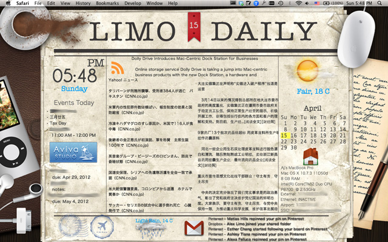

This wallpaper is designed for Mac OS.
I'm an intensive daily news reader that I keep myself updated by using RSS reader apps. Later I found it more convenient if I had the news exhibited on desktop and renewed automatically. The function is easily executed by Geektool from Tynsoe.Org, which is able to display useful system info on desktop background. Or even integrate them as part of our wallpapers. Now this awesome tool is available in Mac App Store where you can directly get a copy for free.
On the desktop, every piece of constantly changing information is generated by Geektool. Each refreshing rate is based on your setting individually. Thanks to the Geeklets website founder Matt Swain, abundant scripts have been published and shared over the world. And this is where I started learning the toolkit.
Current Weather from Yahoo! Weather
We need 3 shell scripts to display current weather report as well as an icon for a certain city.
City Main Page
curl --silent "http://weather.yahoo.com/xxx/xxx/xxx-xxx/?unit=c" | grep "forecast-icon" | sed "s/.*background\:url(\'\(.*\)\')\;\ _background.*/\1/" | xargs curl --silent -o /tmp/weather.png\Open Yahoo! Weather, search for the city you want, copy the page URL and replace the script's counterpart.
City RSS
curl --silent "http://weather.yahooapis.com/forecastrss?p=CHXX0116&u=c" | grep -E '(Current Conditions:|C
//' -e 's///' -e 's/<\/description>//' On the city page you just landed, copy its RSS link at the upper right corner and replace the script's counterpart as well.
Weather Icon
file:///tmp/weather.pngYou don't need to do anything regarding this code UNLESS you want more than one cities being displayed in the same time. To make it more clear, if you show reports for two cities, one of their icon file "weather.png" has to be renamed differently as you prefer but must be consistent for both the script of City Main Page and the Weather Icon. Otherwise both cities will exhibit the same weather icon.
Support or Contact
Having questions with shell codes? You may find more scripts on Geeklets website. Or you can send me an email for further discussion.
Authors and Contributors
You can @mention a GitHub username to generate a link to their profile. The resulting <a> element will link to the contributor's GitHub Profile. For example: In 2007, Chris Wanstrath (@defunkt), PJ Hyett (@pjhyett), and Tom Preston-Werner (@mojombo) founded GitHub.